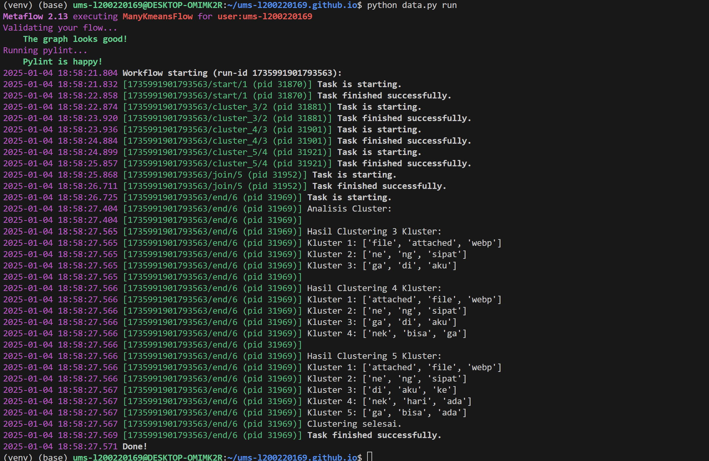

1. Mengekstrak data dari wa berbentuk txt.
2. Membersihkan data dari yang tidak diperlukan sekaligus mengubah format file dari txt menjdi csv.
3. Menggunakan algoritma clustering dengan metode K-Means untuk mengelompokkan data berdasarkan kata-kata yang sering muncul.
4. Memanfaatkan library Python seperti scikit-learn untuk menghitung nilai TF-IDF dan menerapkan clustering.
5. Mengevaluasi hasil clustering untuk memastikan bahwa setiap kluster memiliki karakteristik unik yang representatif.

Penjelasan tentang gambar: Deskripsi laporan pertama UAS.
Analisis Tiap Kluster - Clustering 3 Kluster:
Kluster 1: Kata-kata seperti 'file', 'attached', dan 'webp' menunjukkan bahwa pesan dalam kluster ini mungkin terkait dengan file atau lampiran (attachment). Hal ini bisa mencakup pengiriman dokumen atau gambar.
Kluster 2: Kata-kata seperti 'ne', 'ng', dan 'sipat' tampaknya berhubungan dengan bahasa informal atau dialek lokal, mungkin menunjukkan pesan percakapan santai.
Kluster 3: Kata-kata 'ga', 'di', dan 'aku' mengindikasikan percakapan pribadi atau santai dengan gaya informal, yang sering ditemukan dalam percakapan sehari-hari.
Clustering 4 Kluster:
Kluster 1: Masih didominasi oleh 'file', 'attached', dan 'webp', menunjukkan kluster ini tetap fokus pada pesan terkait file.
Kluster 2: Sama seperti sebelumnya, fokus pada istilah lokal seperti 'ne', 'ng', dan 'sipat'.
Kluster 3: Sama dengan clustering 3 kluster, berisi percakapan santai dan pribadi.
Kluster 4: Kata 'nek', 'bisa', dan 'ga' menunjukkan percakapan dengan konteks tertentu, mungkin tentang rencana atau negosiasi.
Clustering 5 Kluster:
Kluster 1: Fokus pada 'file', 'attached', dan 'webp', konsisten dengan kluster sebelumnya.
Kluster 2: Sama dengan kluster 2 di hasil clustering lainnya, menunjukkan pola percakapan tertentu.
Kluster 3: Kata 'di', 'aku', dan 'ke' lebih condong ke percakapan informal yang sifatnya umum.
Kluster 4: Kata 'nek', 'hari', dan 'ada' mengarah pada percakapan spesifik, mungkin tentang jadwal atau kegiatan tertentu.
Kluster 5: Kata 'ga', 'bisa', dan 'ada' tampaknya menggambarkan percakapan tentang kemungkinan atau rencana yang mungkin tidak berhasil.